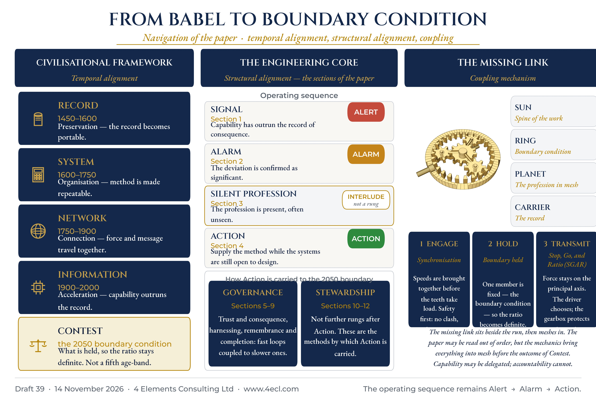

This portal is the instruction and the app entry. It is a beta test model, not a finished issue. Quest and the later Reality Engine prototype stay split. Accept is not required to enter, and it is not required to go on.
The covering under Figure AThe Silent Profession is the coupling from Alarm to Action, not a fourth rung
Engage, Hold, and Transmit sit in the missing link. Hold is the halt — one member stays fixed so the boundary becomes definite. Issued Figure A is not recut. The Draft 39 navigation, as shared, is shown below as the covering, not as a new issue.
Civilisational framework
Temporal alignment
- Record 1450–1600
- System 1600–1750
- Network 1750–1900
- Information 1900–2000
- Contest the 2050 boundary condition, not a fifth age-band
The engineering core
Structural alignment — the sections of the paper
- Alert — Signal, Section 1
- Alarm — Section 2
- Silent Profession — Section 3, interlude, not a rung
- Action — Section 4
How Action is carried to 2050: Governance 5–9 · Stewardship 10–12
The missing link
Coupling mechanism
- Engage — synchronisation, before the teeth take load
- Hold — the halt; one member is fixed so the boundary is definite
- Transmit — Stop, Go, and Ratio (SGAR)

Draft 39 navigation, as shared. Covering under issued Figure A. Not issued here, and the issued plate is not recut. This page is a beta test model, not a finished issue.
Signal, the main scalarCivilisational tool dynamics operate on statics, and classic mechanics is in the set too
That is S = (A × P) / β. A is actual participation. P is persistence. B (β) is the resistance of the system.
The 4Rs act on that statics: Revelation raises A, Resilience raises P, Regeneration lowers β, Recursion raises n.
iCU
The individual cognition unit in the Infrastructure—Institution—Individual triad, where agency sits. It couples, Maslow–Dearden, from the small individual to planetary civilisation.
The scalar is the same relation read at two scales: the person (HICE) and the civilisation (ISI). One scalar, the scale changes.
Midnight countdown · Flight Deck
The call to arm and completion in the age of contest era — now — who dares wins.
Competition to completion.
Competition is the path to completion, not an end in itself.
Shall we take the call?
Accept remains a Level 1 act.
It is for the site owner. It is not the public door. This page does not press Accept, and a visitor does not need to accept or decline in order to be here or to proceed into the engine.